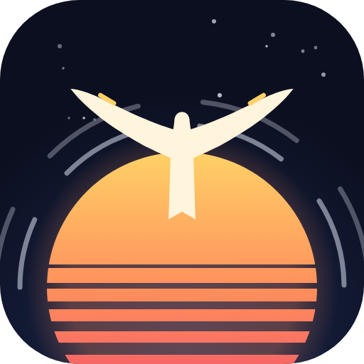
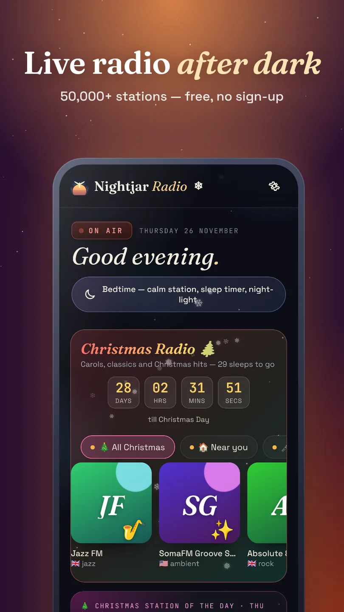
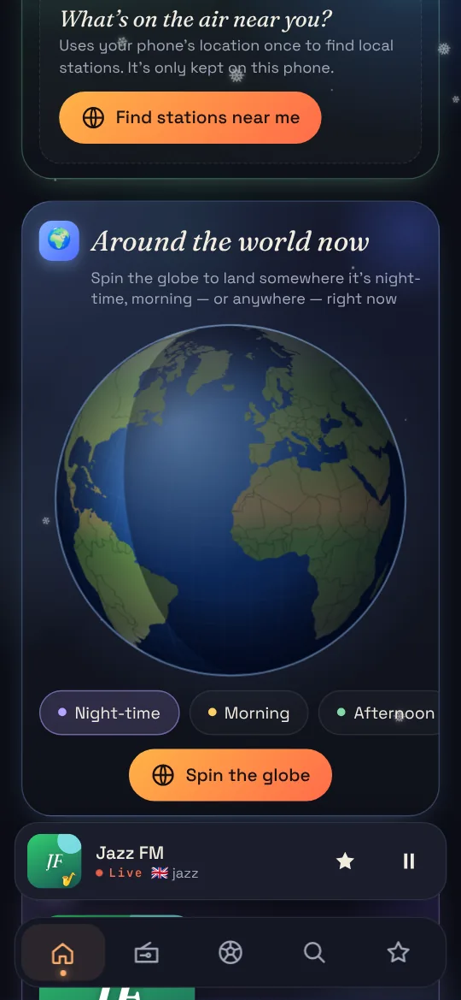
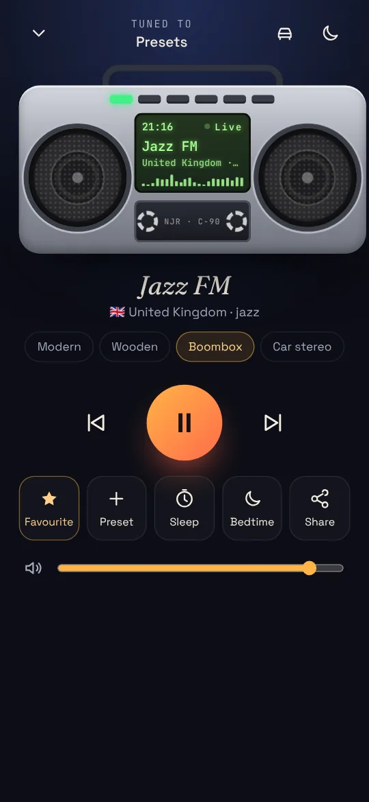

Nightjar Radio
Free live radio from over 50,000 stations around the world — with presets, a tuning dial and a spinning globe.
Take a look








Home — Christmas Radio, presets & more
Station names are examples
What’s inside
Plus lots more
* In the Android app.
How to install
Android
- Tap Download for Android above (in Chrome).
- When it’s downloaded, tap the file to open it.
- If asked, allow Chrome to install unknown apps, then go back.
- Tap Install. If Play Protect warns you, tap More details → Install anyway.
- Open Nightjar Radio. Future updates pop up inside the app.
The warning appears for any app that isn’t from the Play Store.
iPhone & iPad
- Open radio.churr.co.uk in Safari (or tap the button above).
- Tap the Share button, then Add to Home Screen.
- Open it from your home screen — it works like an app, full screen.
Why the home screen? Safari can clear a website’s saved data if you don’t visit for a week — on your home screen, your presets and favourites are kept safe.
Windows, Mac or Chromebook
- Open radio.churr.co.uk in Chrome or Edge (or click the button above).
- Click the Install icon at the right of the address bar (or ⋮ menu → Install Nightjar Radio).
- It opens in its own window. Right-click its icon for shortcuts like Bedtime and Spin the globe.
Questions
Is it really free?
Yes. No adverts, no subscription and no sign-up. Nightjar Radio is made by one person in the UK as a hobby — if you enjoy it, you can buy me a coffee.
Why isn’t it on the Play Store?
It’s a small independent app, so it’s shared here directly instead. Once installed, it tells you when there’s an update and installs it for you.
Is it safe to install?
The Play Protect warning appears for any app that doesn’t come from the Play Store. Nightjar Radio has no adverts and no trackers, and asks only for what it needs (like notifications for the player). The privacy policy explains exactly what it keeps.
Does it use much data?
Most stations use about 30–60 MB an hour. On mobile data, the app’s Data saver switches to a lighter stream when a station has one, and Settings shows how much you’ve used this month.
Is there an iPhone app?
Not a separate one — on iPhone and iPad, open the website in Safari and add it to your Home Screen. It then opens full screen like an app.
Why won’t a station play?
Stations sometimes go offline, and some only let listeners in their own country. The app tells you when it can, and you can always spin to another one.